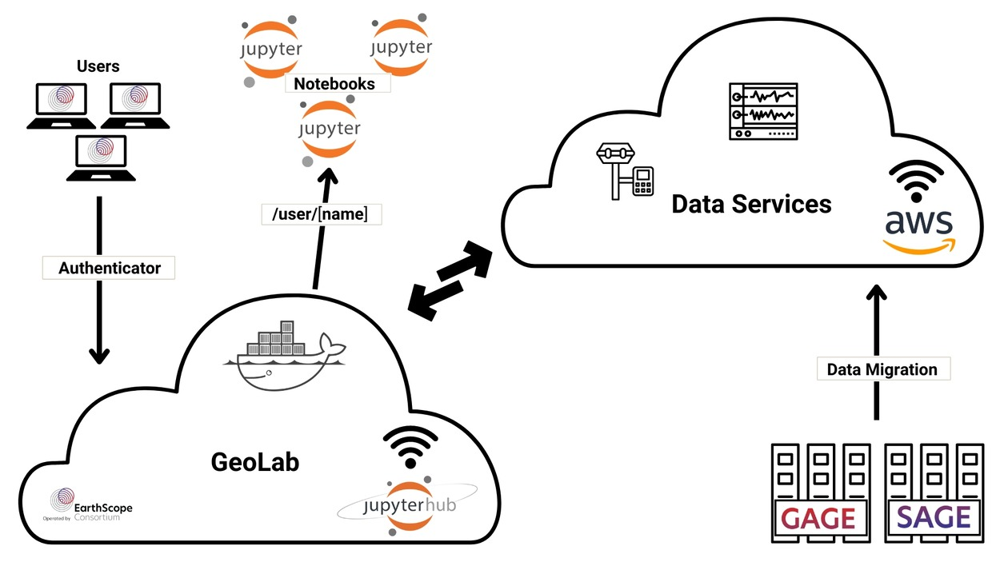

Welcome to GeoLab#
About GeoLab#
The EarthScope-operated data systems of the NSF GAGE and SAGE Facilities are transitioning to cloud services, introducing new capabilities for users to leverage cloud computing for their projects. As part of this transition, the EarthScope GeoLab JupyterHub provides a powerful platform for accessing Jupyter Notebooks in a shared, cloud-based environment. GeoLab is a collaborative environment for students/researchers to work on data-intensive projects. Providing access to powerful computational resources, tools, and a community of experts.
Why Migrate?#
The cloud migration enhances data reliability and scalability, enabling on-demand serverless elasticity and efficient data processing. Researchers will benefit from adjacent scalable cloud computing, particularly for machine learning projects. This shift aligns with broader movements toward more open and equitable science
Why use notebooks?#
Notebooks facilitate seamless collaboration by allowing multiple users to work in the same environment without setup, streamlining scientific workflows. They enhance reproducibility and transparency by documenting analysis methods in a ready-to-run package. Their flexibility allows them to be used as static web pages, embedded in web apps, or integrated with various systems, making them versatile for scientific research and data analysis tools.
GeoLab Code of Conduct#
EarthScope is committed to open-source software for collaboration, transparency, and better solutions. Security and resource management are top priorities; protect your login credentials, report vulnerabilities, and follow all security protocols. Use resources responsibly, comply with EarthScope’s policies, and respect legal and regulatory requirements.
EarthScope Code of Conduct Learn more here.
About Our Partners#
2i2c#
GeoLab (JupyterHub) is powered by 2i2c (International Interactive Computing Collaboration), a non-profit organization that builds and operates cloud infrastructure for interactive computing.
2i2c Learn more here.
Amazon Web Services (AWS)#
AWS services enable efficient data processing, storage, and analysis, supporting real-time analytics and machine-learning applications while ensuring data security and compliance with industry standards. This migration aims to enhance EarthScope’s capabilities in preserving, discovering, and delivering geophysical data.
AWS Learn more here.
About the Hub#

What Are Docker Containers?#
Docker containers are like storage boxes that hold all the parts needed to run a piece of software. Imagine you want to bake a cake, but you need all the ingredients, utensils, and the oven to be exactly the same every time you bake it, no matter where you are. Docker containers do this for software. Each container includes the software, all the files it needs, and even the tools to run it, all packed together. This way, the software will work exactly the same whether you run it on your laptop, a server at your company, or in the cloud. Docker containers are also quick to start and use less memory because they share parts of the operating system from the computer they run on. This makes developing, testing, and deploying software consistently across different environments easy.
What Are Docker Images?#
Docker images are like blueprints or recipes for creating Docker containers. Imagine you have a detailed recipe for baking a cake, which includes a list of ingredients and step-by-step instructions. A Docker image works similarly by specifying all the parts and instructions needed to create a Docker container. It includes the application code, libraries, dependencies, and other necessary files. Using a Docker image creates a container that runs exactly as described in the image. This ensures that every container created from the same image will be identical, providing consistency and reliability. Docker images can be shared and reused, making distributing and deploying software easy across different machines and environments.
Images Available for Users#
GeoLab: This image is designed for students and researchers. It includes pre-installed tools and libraries commonly used in geophysical studies.
MsPASS: This curated image is specifically prepared for the MsPASS short course.
Custom Images: Custom images can be created upon request. If you have specific requirements or need particular software setups, please reach out to the administration to discuss your needs and have a custom image prepared for you.
What are GeoLab Compute Instances#
Compute instances are like ovens that provide the necessary environment and resources to run your Docker containers. Just as different ovens can vary in size, power, and features, compute instances come in various configurations to match different computational needs.
Imagine you want to bake multiple cakes simultaneously. A small oven might only fit one or two cakes at a time, while a larger, industrial oven can handle dozens. Similarly, a small compute instance might be sufficient for running a few lightweight applications. Still, a larger instance with more CPU power, memory, and storage is necessary for more demanding tasks or multiple applications.
In cloud computing, compute instances are virtual machines provided by cloud service providers like AWS, Google Cloud, or Azure. These instances can be scaled up or down based on your needs, allowing you to allocate resources dynamically to handle workloads efficiently.
Key Features of Compute Instances: Scalability: You can quickly scale your compute resources up or down based on demand. This is like adjusting the size of your oven to bake more cakes during a busy season and fewer when demand is low.
Flexibility: Compute instances come in various sizes and configurations, allowing you to choose the right amount of CPU, memory, and storage for your applications. It’s like having the option to select an oven with different capacities and features depending on the complexity and volume of baking you need to do.
Reliability: Cloud providers offer high availability and fault tolerance, ensuring that your compute instances are reliable and your applications run smoothly. This is like having a well-maintained oven that consistently performs well, reducing the risk of baking failures.
What are Notebooks?#
Notebooks are interactive, web-based documents that combine code, text, and visualizations in a single, cohesive environment. In research and education, notebooks are invaluable for documenting experiments, teaching programming and data analysis, and presenting findings. They provide a hands-on learning experience where students and researchers can run code, see the output, and make adjustments on the fly. For data scientists and developers, notebooks are a powerful tool for prototyping, data exploration, and sharing insights with colleagues. They enable seamless collaboration, as the entire workflow—from data preprocessing to model training and visualization—can be documented and shared.
Key Features of Notebooks:
Rich Text Support: Notebooks support markdown, including formatted text, images, and links alongside your code.
Visualizations: You can create and display plots, charts, and other visualizations directly within the notebook.
Reproducibility: Since notebooks can be shared and executed on different machines, they ensure that the same results can be achieved, provided the environment is consistent.
Interactive Widgets: Notebooks can include interactive elements such as sliders, buttons, and forms, allowing for dynamic and interactive data exploration.
External Resources#
How to Get Help / Ask Questions#
If you encounter any issues or have questions, there are several ways to get help:
Slack: Join our Slack channel [#geolab-support]
Data Help Desk Need Help
Extras#
Here are some additional resources to help you get started:
Python: Learn Python programming here.
Notebooks: Learn how to use Jupyter Notebooks here.
Cloud Computing: Understand cloud computing concepts here.
We hope you have a productive experience with GeoLab. Happy computing!